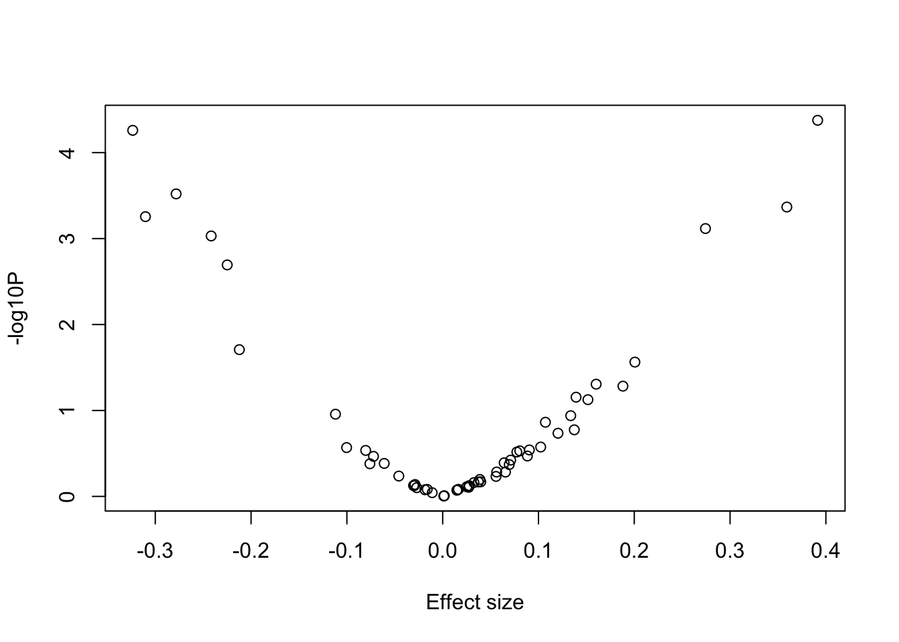

Last updated: 2025-06-01
Checks: 6 1
Knit directory:
SISG2025_Association_Mapping/
This reproducible R Markdown analysis was created with workflowr (version 1.7.0). The Checks tab describes the reproducibility checks that were applied when the results were created. The Past versions tab lists the development history.
The R Markdown is untracked by Git. To know which version of the R
Markdown file created these results, you’ll want to first commit it to
the Git repo. If you’re still working on the analysis, you can ignore
this warning. When you’re finished, you can run
wflow_publish to commit the R Markdown file and build the
HTML.
Great job! The global environment was empty. Objects defined in the global environment can affect the analysis in your R Markdown file in unknown ways. For reproduciblity it’s best to always run the code in an empty environment.
The command set.seed(20230530) was run prior to running
the code in the R Markdown file. Setting a seed ensures that any results
that rely on randomness, e.g. subsampling or permutations, are
reproducible.
Great job! Recording the operating system, R version, and package versions is critical for reproducibility.
Nice! There were no cached chunks for this analysis, so you can be confident that you successfully produced the results during this run.
Great job! Using relative paths to the files within your workflowr project makes it easier to run your code on other machines.
Great! You are using Git for version control. Tracking code development and connecting the code version to the results is critical for reproducibility.
The results in this page were generated with repository version 421fcd0. See the Past versions tab to see a history of the changes made to the R Markdown and HTML files.
Note that you need to be careful to ensure that all relevant files for
the analysis have been committed to Git prior to generating the results
(you can use wflow_publish or
wflow_git_commit). workflowr only checks the R Markdown
file, but you know if there are other scripts or data files that it
depends on. Below is the status of the Git repository when the results
were generated:
Ignored files:
Ignored: .DS_Store
Ignored: .qodo/
Ignored: analysis/.DS_Store
Ignored: data/run_regenie.r
Ignored: data/sim_rels_geno.bed
Ignored: exe/
Ignored: gwas_plink.log
Ignored: gwas_regenie.log
Ignored: ldRef.log
Ignored: lectures/
Ignored: mk_website.R
Ignored: notes.txt
Ignored: step2_gwas_regenie.log
Ignored: test1.log
Ignored: test2.log
Ignored: test3.log
Ignored: test4.log
Ignored: tmp/
Untracked files:
Untracked: .mk_website.R.swp
Untracked: GWAS.ma
Untracked: _workflowr.yml
Untracked: analysis/.index.Rmd.swp
Untracked: analysis/QG3_Association_Testing_practical_Key.Rmd
Untracked: analysis/QG3_Beyond_Standard_GWAS_practical_Key.Rmd
Untracked: analysis/QG3_CC_Imbalance_practical_Key.Rmd
Untracked: analysis/QG3_Downstream-Analyses_practical_Key.Rmd
Untracked: analysis/QG3_Plink_Population_Structure_practical_Key.Rmd
Untracked: analysis/QG3_Plink_Population_Structure_practical_Key_cache/
Untracked: analysis/QG3_Polygenic_Scores_practical_Key.Rmd
Untracked: analysis/QG3_Power-Design_practical_Key.Rmd
Untracked: analysis/QG3_RV_tests_practical_Key.Rmd
Untracked: analysis/QG3_Relatedness_REGENIE_practical_Key.Rmd
Untracked: causals.snplist
Untracked: ldRef.bed
Untracked: ldRef.bim
Untracked: ldRef.fam
Untracked: ldRef.map
Untracked: ldRef.ped
Untracked: sim.config
Untracked: test1.cma.cojo
Untracked: test1.jma.cojo
Untracked: test1.ldr.cojo
Untracked: test2.cma.cojo
Untracked: test2.jma.cojo
Untracked: test2.ldr.cojo
Untracked: test3.cma.cojo
Untracked: test3.jma.cojo
Untracked: test3.ldr.cojo
Untracked: test4.cma.cojo
Untracked: test4.jma.cojo
Untracked: test4.ldr.cojo
Unstaged changes:
Modified: analysis/QG3_Downstream-Analyses_practical.Rmd
Modified: analysis/_site.yml
Note that any generated files, e.g. HTML, png, CSS, etc., are not included in this status report because it is ok for generated content to have uncommitted changes.
There are no past versions. Publish this analysis with
wflow_publish() to start tracking its development.
Before you begin:
library(data.table)
library(dplyr)
library(BEDMatrix)
library(SKAT)
library(ACAT)
library(ggplot2)We will look into a dataset collected on a quantitative phenotype which was first analyzed through GWAS and a signal was detected in a region on chromosome 1. Let’s determine whether the signal is present when we focus on rare variation at the locus. In our analyses, we will define rare variants as those with \(MAF \leq 5\%\).
The file “rv_pheno.txt”” contains the phenotype measurements for a set of individuals and the file “rv_geno_chr1.bed” is a binary file in PLINK BED format with accompanying BIM and FAM files which contains the genotype data.
Let’s first load the files into the R session. We first need to define the path to the directory containing the phenotype and genotype files (change the path to the files location on your machine).
files_dir <- "/SISGM19/data/" Also specify the paths to the PLINK2 binary:
plink2_binary <- "/SISGM19/bin/plink2" We can now read the phenotype file:
pheno_file <- fread(sprintf("%s/rv_pheno.txt", files_dir), header = TRUE)
head(pheno_file, 3) FID IID Pheno
1: 5257 5257 0.73085382
2: 4686 4686 0.38374848
3: 5818 5818 -0.03473697--max-maf to select rare variants
and --maj-ref force so that the minor allele is the effect
allele.# first fill in the thresholds to use for each filter
filter_maf = 0.05
cmd <- sprintf('%s --bfile "%s/rv_geno_chr1" --max-maf %g --maj-ref force --make-bed --out chr1_region_rv', plink2_binary, files_dir, filter_maf)
system(cmd)This generates a new set of PLINK BED genotype files containing only
the variants that passed the MAF filter
chr1_region_rv.{bed,bim,fam}.
BEDMatrix(). We
use option simple_names = TRUE to easily filter by sample
IDs later.G <- BEDMatrix("chr1_region_rv", simple_names = TRUE)Extracting number of samples and rownames from chr1_region_rv.fam...Extracting number of variants and colnames from chr1_region_rv.bim...# identify ID of samples with non-missing phenotypes
ids.keep <- with(pheno_file, IID[ !is.na(Pheno) ])
# subset the genotype & phenotype data based on IDs
G <- G[match(ids.keep, rownames(G)), ]
pheno_file <- pheno_file[match(ids.keep, pheno_file$IID), ] colMeans() function to G and specify
the argument na.rm = TRUE in case missing genotypes are present.# Recall the MAF formula: maf(g) = sum(g) / (2*N) = mean(g) / 2
maf <- colMeans(G, na.rm=TRUE)/2
# we can use the 'hist' function in R to plot histograms
hist(maf, xlab = "Minor allele frequencies", main = "Distribution of MAF")cmd <- sprintf("%s --bfile chr1_region_rv --pheno %s/rv_pheno.txt --pheno-name Pheno --glm allow-no-covars --out test_plink", plink2_binary, files_dir)
system(cmd)
sv_pvals <- fread("test_plink.Pheno.glm.linear")
str(sv_pvals) # what variables are used to store p-values and effect sizes?Classes 'data.table' and 'data.frame': 56 obs. of 16 variables:
$ #CHROM : int 1 1 1 1 1 1 1 1 1 1 ...
$ POS : int 12030946 12032428 12057950 12095233 12100532 12110879 12121069 12137783 12137898 12143774 ...
$ ID : chr "1:12030946:T:C" "1:12032428:A:C" "1:12057950:C:T" "1:12095233:A:C" ...
$ REF : chr "C" "C" "T" "C" ...
$ ALT : chr "T" "A" "C" "A" ...
$ PROVISIONAL_REF?: chr "Y" "Y" "Y" "Y" ...
$ A1 : chr "T" "A" "C" "A" ...
$ OMITTED : chr "C" "C" "T" "C" ...
$ A1_FREQ : num 0.00498 0.00854 0.00789 0.00593 0.00628 ...
$ TEST : chr "ADD" "ADD" "ADD" "ADD" ...
$ OBS_CT : int 9949 9949 9949 9949 9949 9949 9949 9949 9949 9949 ...
$ BETA : num 0.0557 0.0642 -0.3236 -0.076 -0.1003 ...
$ SE : num 0.1021 0.0773 0.0802 0.0936 0.091 ...
$ T_STAT : num 0.546 0.831 -4.035 -0.812 -1.103 ...
$ P : num 0.585383 0.406254 0.000055 0.416873 0.270211 ...
$ ERRCODE : chr "." "." "." "." ...
- attr(*, ".internal.selfref")=<externalptr> # determine the appropriate significance threshold
bonf_threshold <- 0.05 / length(sv_pvals$P)
bonf_threshold[1] 0.0008928571sv_pvals[ sv_pvals$P < bonf_threshold, ] #CHROM POS ID REF ALT PROVISIONAL_REF? A1 OMITTED
1: 1 12057950 1:12057950:C:T T C Y C T
2: 1 12183493 1:12183493:G:A A G Y G A
3: 1 12360016 1:12360016:G:A A G Y G A
4: 1 12405413 1:12405413:T:C C T Y T C
5: 1 12639385 1:12639385:G:A A G Y G A
6: 1 12734720 1:12734720:A:C C A Y A C
A1_FREQ TEST OBS_CT BETA SE T_STAT P ERRCODE
1: 0.00789024 ADD 9949 -0.323574 0.0801934 -4.03492 5.50288e-05 .
2: 0.00773947 ADD 9949 0.274311 0.0814842 3.36643 7.64368e-04 .
3: 0.00643281 ADD 9949 -0.310260 0.0898433 -3.45335 5.55975e-04 .
4: 0.00487486 ADD 9949 0.359249 0.1019850 3.52258 4.29282e-04 .
5: 0.00567896 ADD 9949 0.391421 0.0955243 4.09761 4.20759e-05 .
6: 0.00849332 ADD 9949 -0.278236 0.0769709 -3.61482 3.02042e-04 .with(sv_pvals, plot(x=BETA, y=-log10(sv_pvals$P), xlab = "Effect size", ylab = "-log10P")) 
weights <- dbeta(MAF, 1, 25))For each approach, first need to generate the burden scores.
# CAST : count number of rare alleles for each person and determine if it is > 0
sum_alleles_per_sample <- rowSums(G)
burden.cast <- as.numeric( sum_alleles_per_sample > 0 )
# MZ : count number of sites with rare alleles for each person
burden.mz <- rowSums(G > 0)
# Weighted burden : weighted sum of genotype counts across sites
weights <- dbeta(maf, 1, 25)
burden.weighted <- G %*% weightsRun a test for association between the phenotype and each burden
score using the lm() R function, e.g.
# e.g. for CAST
summary(lm(pheno_file$Pheno ~ burden.cast))
Call:
lm(formula = pheno_file$Pheno ~ burden.cast)
Residuals:
Min 1Q Median 3Q Max
-3.9531 -0.6880 0.0012 0.6822 3.6581
Coefficients:
Estimate Std. Error t value Pr(>|t|)
(Intercept) 0.002423 0.015317 0.158 0.874
burden.cast 0.017757 0.020422 0.870 0.385
Residual standard error: 1.01 on 9947 degrees of freedom
Multiple R-squared: 7.6e-05, Adjusted R-squared: -2.452e-05
F-statistic: 0.7561 on 1 and 9947 DF, p-value: 0.3846# for MZ
summary(lm(pheno_file$Pheno ~ burden.mz))
Call:
lm(formula = pheno_file$Pheno ~ burden.mz)
Residuals:
Min 1Q Median 3Q Max
-3.9521 -0.6894 -0.0013 0.6805 3.6591
Coefficients:
Estimate Std. Error t value Pr(>|t|)
(Intercept) 0.001444 0.013700 0.105 0.916
burden.mz 0.013492 0.011346 1.189 0.234
Residual standard error: 1.01 on 9947 degrees of freedom
Multiple R-squared: 0.0001421, Adjusted R-squared: 4.162e-05
F-statistic: 1.414 on 1 and 9947 DF, p-value: 0.2344# Weighted burden
summary(lm(pheno_file$Pheno ~ burden.weighted))
Call:
lm(formula = pheno_file$Pheno ~ burden.weighted)
Residuals:
Min 1Q Median 3Q Max
-3.9519 -0.6896 -0.0014 0.6804 3.6593
Coefficients:
Estimate Std. Error t value Pr(>|t|)
(Intercept) 0.0012244 0.0136778 0.090 0.929
burden.weighted 0.0006577 0.0005402 1.217 0.223
Residual standard error: 1.01 on 9947 degrees of freedom
Multiple R-squared: 0.000149, Adjusted R-squared: 4.846e-05
F-statistic: 1.482 on 1 and 9947 DF, p-value: 0.2235Looking further at the weighted burden variant weights
# across a wide MAF range
maf_ranges <- seq(.01,.5, length=100)
plot(dbeta(maf_ranges, 1, 25) ~ maf_ranges, type = "l", xlab = "MAF", ylab = "Variant weights in weighted burden test")
points(weights ~ maf, col = "red", pch = 18)# only looking at variants in the data
plot(weights ~ maf, col = "red", pch = 18, xlab = "MAF", ylab = "Variant weights in weighted burden test")# first fit the null model
skat.null <- SKAT_Null_Model( pheno_file$Pheno ~ 1 , out_type = "C")
# Run SKAT association test (returns a list - p-value is in `$p.value`)
skat_sumstats <- SKAT(G, skat.null )
str(skat_sumstats)List of 7
$ p.value : num 8.75e-11
$ p.value.resampling: NULL
$ Test.Type : chr "davies"
$ Q : num [1, 1] 4833265
$ param :List of 4
..$ liu_pval : num 8.75e-11
..$ Is_Converged : num 0
..$ n.marker : int 56
..$ n.marker.test: int 56
$ pval.zero.msg : NULL
$ test.snp.mac : Named num [1:56] 99 170 157 118 125 161 126 160 114 125 ...
..- attr(*, "names")= chr [1:56] "1:12030946:T:C" "1:12032428:A:C" "1:12057950:C:T" "1:12095233:A:C" ...
- attr(*, "class")= chr "SKAT_OUT"skat_sumstats$p.value[1] 8.745405e-11r.corr) to 0 and
then 1.# Example for rho = 0
rho <- 0
skat_sumstats_rho <- SKAT(G, skat.null, r.corr = rho )
skat_sumstats_rho$p.value # = SKAT test[1] 8.745405e-11rho <- 1
skat_sumstats_rho <- SKAT(G, skat.null, r.corr = rho )
skat_sumstats_rho$p.value # = weighted burden test[1] 0.2234603# Run SKATO association test using grid of rho values
skat_sumstats_rho_grid <- SKAT(G, skat.null, method="optimal.adj")
skat_sumstats_rho_grid$p.value[1] 6.121784e-10# `weights` vector is from Question 5
acat.weights <- weights * weights * maf * (1 - maf)
ACAT(sv_pvals$P, weights = acat.weights)[1] 0.00112117# Fill in the p-values
SKAT_pvalue <- 8.745405e-11
Burden_pvalue <- 0.2234603
ACATV_pvalue <- 0.00112117
# compute ACATO
ACAT( c(SKAT_pvalue, Burden_pvalue, ACATV_pvalue) )[1] 2.623621e-10You can explore the impact of different genetic architectures by analyzing 3 simulated phenotypes in “data/rv_pheno_extended.txt”. More specifically, you can run the same analyses done above for each of these traits and compare the performance of the tests relative to how variant effects were simulated:
Here is R code used to generate the phenotypes:
G <- BEDMatrix::BEDMatrix("data/rv_geno_chr1", simple_names = TRUE)
N <- nrow(G)
nsnps <- ncol(G)
# Parameters to change
# sparse : set n.causal = 1
# burden_skat : set prop_causal=0.6 and prop_pos_beta=1
# skat : set prop_causal=0.2 and prop_pos_beta=0.5
prop_causal <- 1
prop_pos_beta <- 1
h2g <- 0.01
n.causal <- round(nsnps * prop_causal)
causal.index <- sample(ncol(G), n.causal)
b_snp <- sqrt(h2g/n.causal)
beta <- rep(b_snp, n.causal)
beta_sign <- sample(c(rep(1, round(n.causal * prop_pos_beta)), rep(-1, n.causal - round(n.causal * prop_pos_beta))))
h2e <- 1 - h2g
y <- scale(G[, causal.index]) %*% beta + rnorm(N, sd = sqrt(h2e))
sessionInfo()R version 4.3.0 (2023-04-21)
Platform: aarch64-apple-darwin20 (64-bit)
Running under: macOS 14.7.4
Matrix products: default
BLAS: /Library/Frameworks/R.framework/Versions/4.3-arm64/Resources/lib/libRblas.0.dylib
LAPACK: /Library/Frameworks/R.framework/Versions/4.3-arm64/Resources/lib/libRlapack.dylib; LAPACK version 3.11.0
locale:
[1] en_US.UTF-8/en_US.UTF-8/en_US.UTF-8/C/en_US.UTF-8/en_US.UTF-8
time zone: America/Chicago
tzcode source: internal
attached base packages:
[1] stats graphics grDevices utils datasets methods base
other attached packages:
[1] ggplot2_3.4.2 ACAT_0.91 SKAT_2.2.5 RSpectra_0.16-1
[5] SPAtest_3.1.2 Matrix_1.5-4 BEDMatrix_2.0.3 dplyr_1.1.2
[9] data.table_1.14.8
loaded via a namespace (and not attached):
[1] sass_0.4.6 utf8_1.2.3 generics_0.1.3 stringi_1.7.12
[5] lattice_0.21-8 digest_0.6.31 magrittr_2.0.3 evaluate_0.21
[9] grid_4.3.0 fastmap_1.1.1 rprojroot_2.0.3 workflowr_1.7.0
[13] jsonlite_1.8.5 promises_1.2.0.1 fansi_1.0.4 scales_1.2.1
[17] jquerylib_0.1.4 cli_3.6.1 rlang_1.1.1 munsell_0.5.0
[21] withr_2.5.0 cachem_1.0.8 yaml_2.3.7 tools_4.3.0
[25] colorspace_2.1-0 httpuv_1.6.11 crochet_2.3.0 vctrs_0.6.2
[29] R6_2.5.1 lifecycle_1.0.3 git2r_0.32.0 stringr_1.5.0
[33] fs_1.6.2 pkgconfig_2.0.3 pillar_1.9.0 bslib_0.5.0
[37] later_1.3.1 gtable_0.3.3 glue_1.6.2 Rcpp_1.0.10
[41] highr_0.10 xfun_0.39 tibble_3.2.1 tidyselect_1.2.0
[45] rstudioapi_0.14 knitr_1.43 htmltools_0.5.5 rmarkdown_2.22
[49] compiler_4.3.0